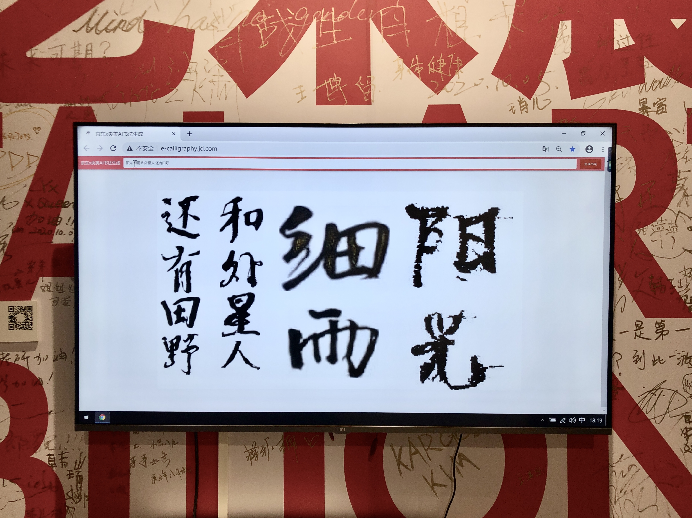
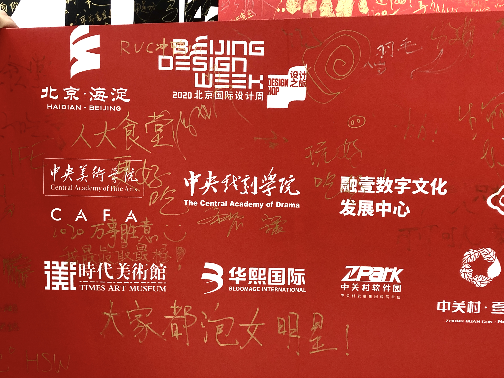
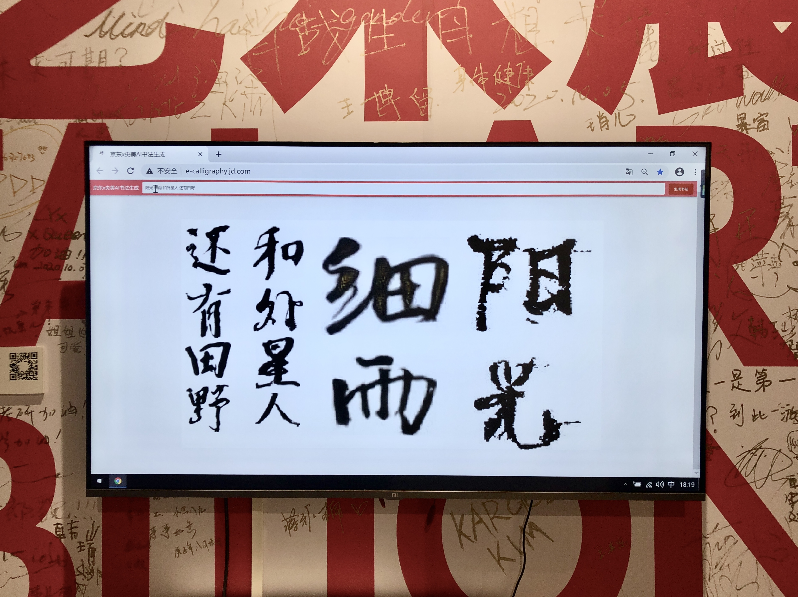
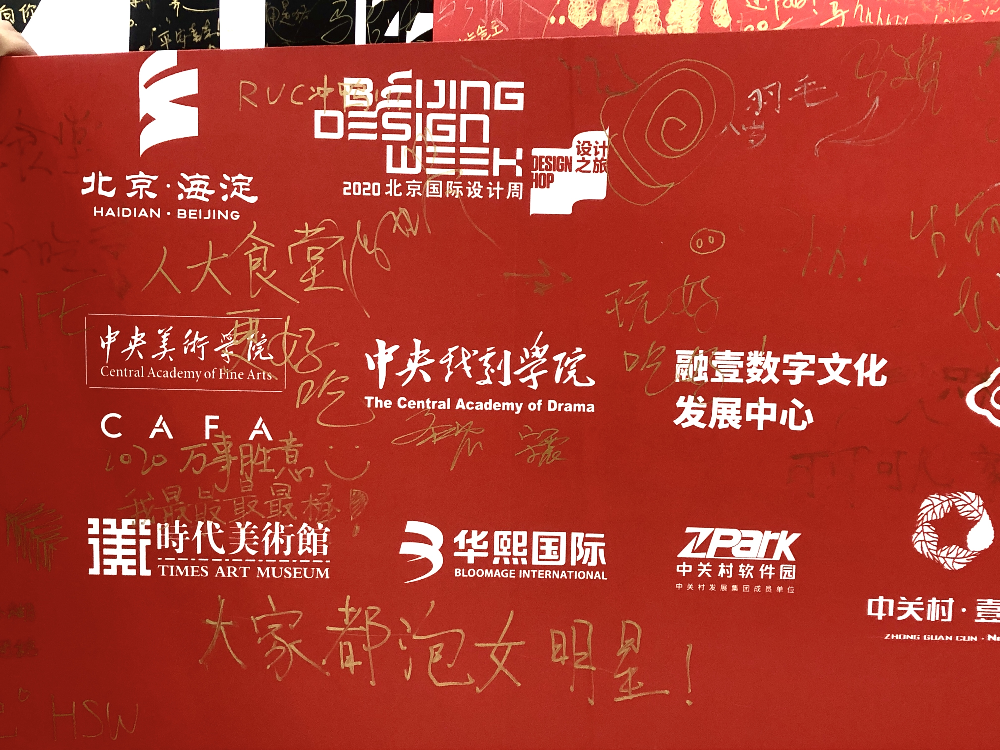

2020.10.26
Day 5 | Comfort Zone
Guiding questions
- Phenomenon: people tend to choose the same seat when constantly visiting the same restaurant/coffee shop/library
- Why do you pick this specific seat?
- What’s the story here?
Inspiration
During my undergraduate, there was a small coffee shop near my school where I visit a lot. Sometimes with my friends and sometimes alone. As long as I have the choice, I’d always choose the corner behind the bookshelf and close to the socket. One day when the waiter brought me my tea, he said “you almost have your name on this table”. Then the thought just hit me that this table have witnessed a period of my history, what book I read, who I grouped with, what ideas I came up with…
Conceptualization
For this project, I want to make a guestbook for the repeat customers of the cafe, each time they visit the coffee shop, they can write something on the specific page of their preferred table.
I choose the form of the guestbook cause people tend to write down things on the guestbook in the museums, library, or wherever given the chance to leave a message. So it seems to be acceptable for information recording.
 



Prototype & Outcome
TODO
Reflection